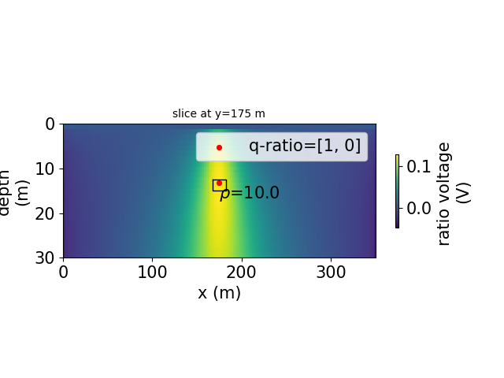
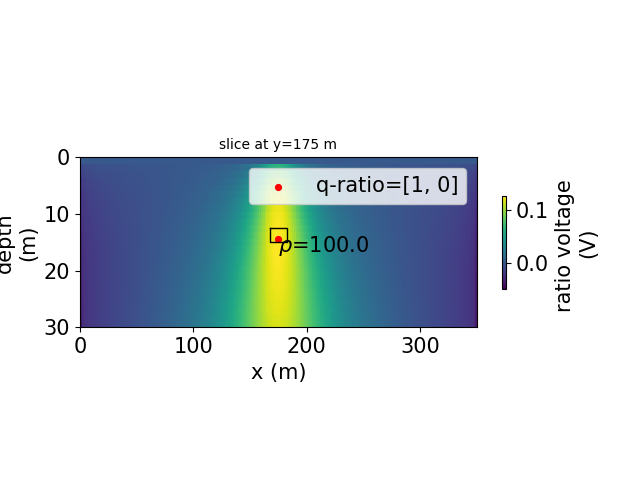

Note
Click here to download the full example code
Sensitivity analysis of DEXP to depth on Mise-a-la-masse
This code shows a step-by-step processing of potential field imaging aiming at giving an estimate of electrical sources positions and depth using the dEXP tranformation method.
dEXP method implementation from Fedi et al. 2012.
Calculations used dEXP, while plotting use the plot_dEXP module.
Application on a anomaly of electrical resistivity.
The model data was created using geometric objects from pygimli.meshtools. The forward simulation of the data was done using pygimli.ERTsimulate module.
Note
This is part of a larger project aiming at inverting current sources density (see more at: https://icsd-dev.readthedocs.io/en/latest/)
References
Uieda, L., V. C. Oliveira Jr, and V. C. F. Barbosa (2013), Modeling the Earth with Fatiando a Terra, Proceedings of the 12th Python in Science Conference, pp. 91 - 98.
Uieda, L. (2018). Verde: Processing and gridding spatial data using Green’s functions. Journal of Open Source Software, 3(29), 957. doi:10.21105/joss.00957
Fedi, M., and M. Pilkington (2012), Understanding imaging methods for potential field data, Geophysics, 77(1), G13, doi:10.1190/geo2011-0078.1
Rucker, C., Gunther, T., Wagner, F.M., 2017. pyGIMLi: An open-source library for modelling and inversion in geophysics, Computers and Geosciences, 109, 106-123, doi: 10.1016/j.cageo.2017.07.011
from fatiando.vis.mpl import square
from fatiando import gridder
# my own functions
import lib.dEXP as dEXP
import lib.plot_dEXP as pEXP
import lib.set_parameters as para
# exemples
import examples.malm.loadmalm.Load_sens_MALM as MALM
import matplotlib.pyplot as plt
plt.rcParams['font.size'] = 15
import numpy as np
MALM DATA synthetic anomaly: analysis of sensitivity
MESH = []
LABEL = []
MESHratio = []
LABELratio = []
DF_F = []
DF_FIT = []
XXZZ = []
CTm = []
filenames = ['MSoilR1AnoR1Z-13.75W15H2.5L5S0Noise0',
'MSoilR10AnoR1Z-13.75W15H2.5L5S0Noise0',
'MSoilR100AnoR1Z-13.75W15H2.5L5S0Noise0',
'MSoilR1000AnoR1Z-13.75W15H2.5L5S0Noise0']
x_axis='y'
for fi in filenames:
print(fi)
x_raw, y_raw, z_raw, U_raw, maxdepth, shape_raw, p1, p2, SimName, ano_prop = MALM.load_MALM_sens3d(filename='./loadmalm/' +
fi + '.pkl')
# pEXP.plot_field(x_raw, y_raw,)
shape = (200,200)
xp,yp,U = gridder.interp(x_raw,y_raw,U_raw,shape)
parameters = para.set_par(shape=shape,max_elevation=abs(maxdepth))
interp = True
scaled = parameters[0]
SI = parameters[1]
zp, qorder, nlay = parameters[2:5]
minAlt_ridge, maxAlt_ridge = parameters[5:7]
#%%
# ridges analysis parameters
nlay = 25
max_elevation = 30
minAlt_ridge = max_elevation*0.05
maxAlt_ridge = max_elevation*0.65
interp = True
smooth = False
#%%
# Anomalies properties
# HDWL : height, Depth, Width (x), Lenght (y)
x1, x2, z1, z2 = [max(x_raw)/2-ano_prop['HWD'][1]/2,max(x_raw)/2 + ano_prop['HWD'][1]/2,
ano_prop['HWD'][2]+ ano_prop['HWD'][0]/2,
ano_prop['HWD'][2]- ano_prop['HWD'][0]/2]
xxzz = [x1, x2, z1, z2]
CT = ano_prop['SoilR']/ano_prop['AnoR']
#%%
qratio = [1,0]
mesh_ratio, label_ratio = dEXP.dEXP_ratio(xp, yp, zp, U, shape,
zmin=0, zmax=max_elevation, nlayers=nlay,
qorders=qratio)
#%%
# save data loop
MESHratio.append(mesh_ratio)
LABELratio.append(label_ratio)
XXZZ.append(xxzz)
CTm.append(CT)
Out:
MSoilR1AnoR1Z-13.75W15H2.5L5S0Noise0
/home/ben/Documents/GitHub/BenjMy/dEXP_imaging/fatiando/gravmag/transform.py:182: UserWarning: Using 'height' <= 0 means downward continuation, which is known to be unstable.
warnings.warn("Using 'height' <= 0 means downward continuation, " +
MSoilR10AnoR1Z-13.75W15H2.5L5S0Noise0
MSoilR100AnoR1Z-13.75W15H2.5L5S0Noise0
MSoilR1000AnoR1Z-13.75W15H2.5L5S0Noise0
Plot the results
scl = 0
i = 0
fig = plt.figure()
ax = plt.gca()
plt, cmap = pEXP.plot_xy(MESHratio[i],scaled=scl, label=LABELratio[i],
markerMax=True,qratio=str(qratio),p1p2=np.array([p1,p2]),
ax=ax, Xaxis=x_axis)
# cbar = plt.colorbar(cmap,shrink=0.25, pad=0.04)
# cbar.set_label('ratio voltage (V)')
x1, x2, z1, z2 = XXZZ[i]
square([x1, x2, -z1, -z2])
ax.set_aspect(aspect=5)
plt.annotate(r'$\rho$=' + str(CTm[i]),[(x1 + x2)/2, -(z1+z2)/2+3])
i = 1
fig = plt.figure()
ax = plt.gca()
plt, cmap = pEXP.plot_xy(MESHratio[i],scaled=scl, label=LABELratio[i],
markerMax=True,qratio=str(qratio),p1p2=np.array([p1,p2]),
ax=ax, Xaxis=x_axis) #, ldg=)
# cbar = plt.colorbar(cmap,shrink=0.25, pad=0.04)
# cbar.set_label('ratio voltage (V)')
x1, x2, z1, z2 = XXZZ[i]
square([x1, x2, -z1, -z2])
ax.set_aspect(aspect=5)
plt.annotate(r'$\rho$=' + str(CTm[i]),[(x1 + x2)/2, -(z1+z2)/2+3])
i = 2
fig = plt.figure()
ax = plt.gca()
plt, cmap = pEXP.plot_xy(MESHratio[i], scaled=scl, label=LABELratio[i],
markerMax=True,qratio=str(qratio),p1p2=np.array([p1,p2]),
ax=ax, Xaxis=x_axis) #, ldg=)
# cbar = plt.colorbar(cmap,shrink=0.25, pad=0.04)
# cbar.set_label('ratio voltage (V)')
x1, x2, z1, z2 = XXZZ[i]
square([x1, x2, -z1, -z2])
ax.set_aspect(aspect=5)
plt.annotate(r'$\rho$=' + str(CTm[i]),[(x1 + x2)/2, -(z1+z2)/2+3])
i = 3
fig = plt.figure()
ax = plt.gca()
plt, cmap = pEXP.plot_xy(MESHratio[i], scaled=scl, label=LABELratio[i],
markerMax=True,qratio=str(qratio),p1p2=np.array([p1,p2]),
ax=ax, Xaxis=x_axis) #, ldg=)
# cbar = plt.colorbar(cmap,shrink=0.25, pad=0.04)
# cbar.set_label('ratio voltage (V)')
x1, x2, z1, z2 = XXZZ[i]
square([x1, x2, -z1, -z2])
ax.set_aspect(aspect=5)
plt.annotate(r'$\rho$=' + str(CTm[i]),[(x1 + x2)/2, -(z1+z2)/2+3])
# # Loop on source depth
# fig, axs = plt.subplots(len(filenames), 1)
# for i in range(len(filenames)):
# pEXP.plot_xy(MESH[i], label=LABEL[i], ax=axs[i]) #, ldg=)
# dfI_f,dfII_f,dfIII_f = DF_F[i]
# pEXP.plot_ridges_harmonic(dfI_f,dfII_f,dfIII_f,ax=axs[i],label=False)
# pEXP.plot_ridges_sources(DF_FIT[i], ax=axs[i], z_max_source=-max_elevation*1.2,
# ridge_type=[0,1,2],ridge_nb=None)
# # x1, x2, z1, z2 = XXZZ[i]
# # square([x1, x2, z1, z2])
# # plt.annotate(CTm[i],[(x1 + x2)/2, -(z1+z2)/2])
- 
- 
Out:
need to rotate first?
Markermax_z=12.0
Markermax_x=175.0
need to rotate first?
Markermax_z=13.2
Markermax_x=175.0
need to rotate first?
Markermax_z=14.399999999999999
Markermax_x=175.0
need to rotate first?
Markermax_z=14.399999999999999
Markermax_x=175.0
Text(175.0, 16.75, '$\\rho$=1000.0')
Total running time of the script: ( 0 minutes 2.933 seconds)